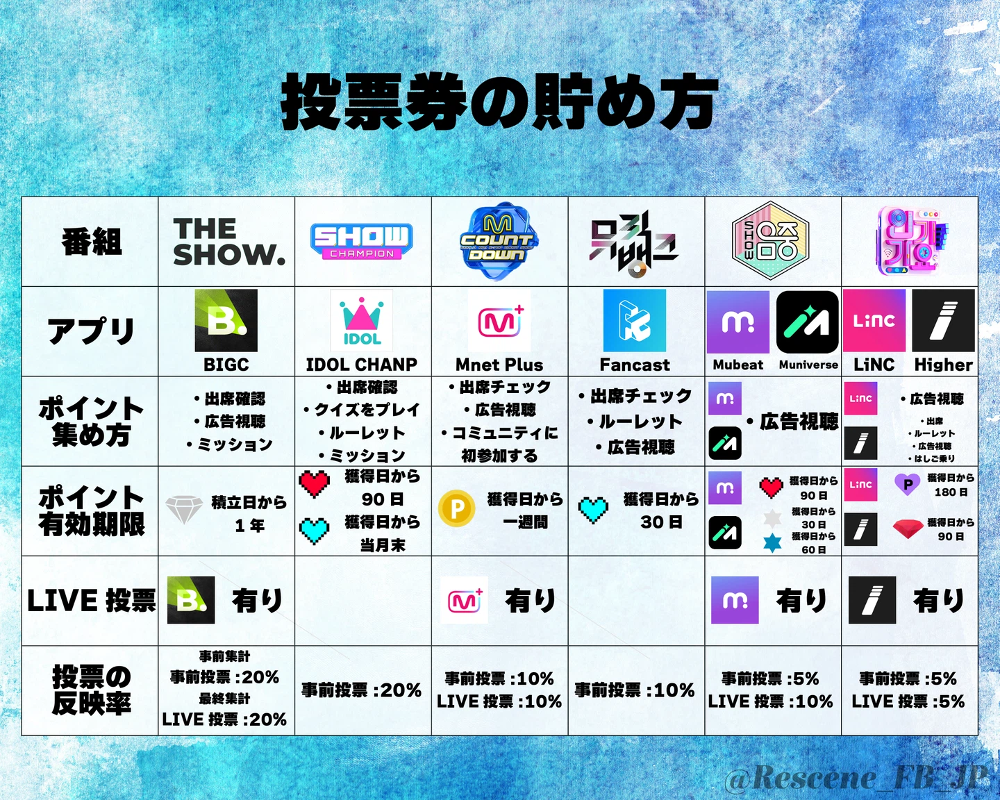

THE SHOW
SBS M・火曜日- 使用アプリ
- BIGC
- 準備するもの
- ROYAL GEM / FREE GEM
- 投票
- 金曜17:00～月曜10:00
「THE SHOW 投票」→「THE K-POP」→「PRE-VOTE 1st Place Nominees」からRESCENEへ投票します。
音楽番組の投票アプリ、事前準備、投票券の集め方をひとつのページにまとめています。カムバック前から準備して、投票開始後すぐに参加できる状態にしておきましょう。
現在、常設で案内しているRESCENE対象の投票はありません。投票が始まり次第、対象番組・期間・締切・投票方法をここに掲載します。
「THE SHOW 投票」→「THE K-POP」→「PRE-VOTE 1st Place Nominees」からRESCENEへ投票します。
対象曲や投票回数は、投票ページ内の案内を必ず確認してください。
投票受付中のみ投票メニューが表示されます。リアルタイム投票は対象者発表後に参加します。
Music Bankの投票バナーから対象投票へ進みます。
投票種別によって使用する投票通貨や参加条件が異なる場合があります。
LiNCはInkigayoの事前投票で使用します。
リアルタイム投票は放送中の短い時間だけ行われます。事前にアプリを開ける状態にしてください。
※ 配点、投票期間、必要ポイント、投票可能回数は変更される場合があります。カムバック時にRESCENE JAPAN FANBASEの案内と各公式投票画面を確認してください。

各番組の放送曜日と使用する投票アプリを、画像でまとめて確認できます。
音盤購入、YouTubeなどのSNS、事前投票、リアルタイム投票は日本からも参加できます。配点や集計方式は改定される場合があるため、カムバック時は公式案内を優先してください。

火曜日 / BIGC

水曜日 / IDOLCHAMP

木曜日 / Mnet Plus

金曜日 / Fancast

土曜日 / Mubeat

日曜日 / LiNC・HIGHER
事前投票：金17:00～月10:00
事前集計：音源40%＋音盤20%＋FAN ENGAGEMENT20%＋事前投票20%（100%）
当日集計：事前集計100%＋当日投票20%
集計元：音源はサークルチャート、音盤はハントチャート。
FAN ENGAGEMENT：公式YouTube・SNSのグローバルなファンダム変化や活動接数などを客観的なデータで算出したスコアです。
※ テキスト版のスコア配分は、ユーザー提供のNMIXX投票サイト資料をもとに掲載しています。番組改編などで変更される可能性があります。
※ 早見表画像は、ユーザー提供の画像をそのまま掲載しています。画像版とテキスト版の両方で確認できます。
下のアプリ一覧から必要なアプリを入れ、アップデートも済ませておきます。
メール認証やニックネーム設定まで完了し、ログインできるか確認します。
ログイン、広告視聴、ミッションなどで、期限のある通貨から計画的に集めます。

ログイン、広告視聴、ミッションなど、各アプリで毎日コツコツ集められる投票券・ポイントをまとめた画像です。詳細は下のアプリ別画像ガイドでも確認できます。

THE SHOW 事前投票

SHOW CHAMPION

M COUNTDOWN

Music Bank

Show! Music Core

Inkigayo 事前投票

Inkigayo リアルタイム投票

補助・イベント投票
各アプリの投票方法・投票券の貯め方を画像付きでまとめています。アプリを開く前に対象番組と必要な投票通貨を確認してください。
BIGCTHE SHOW 事前投票有償のみ入手可能。1票＝20 ROYAL GEM
毎日の出席チェック、広告視聴、ミッション参加で入手可能。1票＝400 FREE GEM

出席チェックやミッションでFREE GEMを集めます。

広告視聴などで投票に必要なGEMを事前に確保しておきます。
THE SHOW 投票 → THE K-POP → PRE-VOTE 1st Place Nominees → RESCENE の順に進み、投票数を入力して完了です。
無料参加の場合は、毎日の出席チェック・広告視聴・ミッションでFREE GEMを事前に集めてください。
IDOLCHAMPSHOW CHAMPION
広告視聴や出席チェックで投票通貨を集めます。

SHOW CHAMPIONの対象投票を選択します。

曲名とアーティスト名を確認し、投票を完了します。
投票前にRESCENEの曲名・アーティスト名・投票締切を確認してください。
Mnet PlusM COUNTDOWN
アプリ内のM COUNTDOWNコンテンツから投票ページへ進みます。

受付中の事前投票またはリアルタイム投票でRESCENEを選択します。
Mnet Plusは投票通貨を集める形式ではありません。事前にアカウントへログインしてください。
FancastMusic Bank
まずは毎日のミッションでHeartsを集めます。

追加のミッションや広告視聴でもHeartsを獲得できます。

期限切れ前に使えるHeartsを準備しておきます。

Music Bankの投票バナーを見つけて開きます。

投票対象の回を選びます。

アーティスト名・楽曲名を確認して進みます。

使用するHearts数を確認し、投票を完了します。
MubeatShow! Music Core
出席チェックや広告視聴でHeart Beatsを準備します。

ミッションやアプリ内コンテンツも活用します。

使用できるHeart Beatsの種類と期限を確認します。

投票タブからShow! Music Coreの投票画面を開きます。

候補一覧からRESCENEを見つけて選択します。

投票数を確認して送信します。
LiNCInkigayo 事前投票
まずは毎日ログインしてポイントを集めます。

ミッションやコンテンツ参加でも獲得できます。

Inkigayoの事前投票メニューへ進みます。

対象回を確認し、RESCENEへ投票します。
HIGHERInkigayo リアルタイム投票
放送前にInkigayoのリアルタイム投票入口を確認しておきます。

候補が表示されたらRESCENEを選択します。

ルビー数を確認し、リアルタイム投票を完了します。
リアルタイム投票は受付時間が短いため、放送前にログインと通信環境を確認してください。
Muniverse補助アプリ
今後に備えて、補助的にポイントを貯めるアプリも準備できます。

ログインやミッションで毎日ポイントを集めます。

必要になったときにすぐ参加できるよう、画面の見方を把握しておきます。
MuniverseとPlus Chatは現在の主要番組投票一覧には含めていませんが、今後のイベントや補助アプリとして使う場合に備えて画像を掲載しています。
アプリの仕様変更や臨時ルールがある場合、最新の公式案内を優先します。
同名曲や候補の取り違えを防ぐため、RESCENEと対象曲を確認してから投票します。
日本と韓国は同じ時刻ですが、投票締切の日付と曜日を必ず確認してください。
課金は必須ではありません。無料でできる範囲から安全に参加してください。